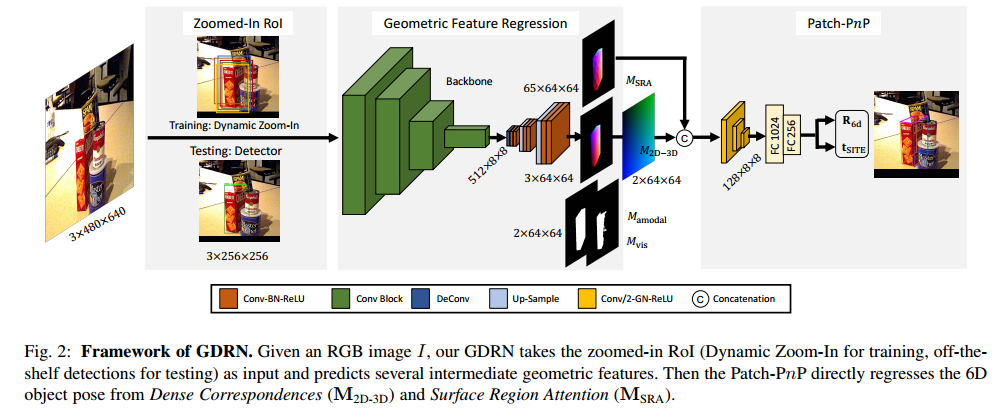
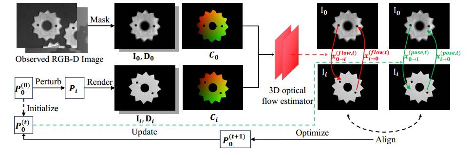

GDRNPP指南
本文最后更新于 2026年7月25日 晚上
1. 项目背景
实习期间做了6D位姿估计相关的工作，主要内容是使用GDRNPP来对箱子这种刚性物体做6D位姿估计，为机器人抓取提供目标位姿。
2. 技术原理
2.1 6D位姿的定义
6D 位姿由三维旋转和三维平移组成：
1 | |
其中，R 是 3×3 旋转矩阵，描述箱子朝向；t=[tx, ty, tz] 是物体坐标系原点在相机坐标系下的位置。机器人结合相机内参和相机—机械臂外参，可将该位姿转换到机器人基座坐标系，生成抓取位姿。
2.2 GDRNPP原理概述
GDRNPP 是一种基于 RGB 图像的 6D 物体位姿估计方法。它的目标是从图像中估计物体相对于相机的旋转 和平移 ：
其中 $T_{co}$ 表示物体坐标系到相机坐标系的变换。
其核心思想不是直接从图片回归6D位姿，而是先预测物体表面的稠密几何关系，再通过Patch-PnP 模块将这些几何信息转换成最终的6D位姿。
整体流程：
1 | |

该图为backbone。
2.2.1 目标检测与 ROI 裁剪
首先从YOLOX等检测器得到目标框再裁剪出原图的ROI并缩放至固定大小
1 | |
由于 ROI 被缩放过，网络输出的平移不能直接当成原始相机坐标，需要结合原始检测框和相机内参恢复。
2.2.2 预测稠密几何对应
GDRNPP 会对 ROI 中的每个像素预测它对应于 CAD 模型表面的哪个三维位置。输出包括：
-
（密集对应关系）
对于目标像素 ，网络预测其在物体坐标系中的三维坐标：
这样就形成了二维像素与三维模型点之间的对应，这和传统 PnP 所需的 2D–3D 对应关系类似，但这里的对应关系是网络稠密预测出来的。
-
（表面区域注意力图）
网络将 CAD 模型表面划分成若干区域，通常通过 FPS，即最远点采样，选择一组区域中心。每个像素需要预测自己属于哪个三维表面区域。
==Region 输出相当于一个粗粒度的表面对应关系，而 XYZ 是更精细的连续坐标预测。两者结合可以提高几何对应的稳定性。==
对于每个像素，网络输出一个 维概率向量：
其中 表示该像素对应第 个表面区域的概率。对于非对称物体，一个像素的结果可能是：
如果是一个对称物体，它的结果可能是：
网络输出的多峰概率分布本身就编码了物体的对称歧义，减少了错误使用歧义对应的风险。
我的理解是，直接从像素预测对应的物体三维点是很难的，所以加了一个预测“该像素对应模型表面哪个粗区域”的一个粗粒度的对应关系的预测，是一个由粗到细的一个约束。但并不是表示网络在执行时严格串行地先预测 Region，再用 Region 计算 XYZ。
对于帮助 Patch-PnP 稳健估计位姿来说，主要不是因为它凭空增加了几何约束，而是因为它减少了错误使用歧义对应的风险：避免根据这类像素强行判断“到底是哪一侧”。 预测的连续坐标可能会落在模型表面上，但如果该像素属于对称物体的歧义区域，网络就可能预测出错误的 XYZ 坐标。 告诉 Patch-PnP 哪些空间区域有辨识度、哪些区域存在对称歧义，就不会错误使用 对对称区域的错误判断。
-
表示当前图像中实际可见的物体区域。
-
表示假设不存在遮挡时，物体在图像中的完整投影范围。
- MVis 描述实际看见的部分；
- MFull 描述物体理论上完整的轮廓。
通过同时预测两者，网络可以区分“物体边界”和“遮挡边界”。
2.2.3 Patch-PnP 位姿回归
传统 PnP 会显式地使用若干组 2D–3D 对应点，通过最小化重投影误差求解位姿：
GDRNPP 的 Patch-PnP 不完全等同于调用 OpenCV 的 solvePnP。
它把网络预测的：
- XYZ 坐标图；
- Region 特征；
- Mask；
- 像素二维位置；
组合成几何特征，然后通过一个可学习的网络模块直接回归旋转和平移。
因此它同时利用了： - 像素与模型的对应关系；
- 目标的局部结构；
- 整体物体形状；
- 不同区域的可靠程度
可以将其理解为：
一个由深度网络实现的、可端到端训练的 PnP 求解器。
2.2.4 旋转预测
GDRNPP 通常预测的是 allocentric rotation，即客体中心旋转，而不是直接预测最终的 egocentric rotation。
Allocentric rotation
描述物体自身相对于观察方向的姿态，尽量减少物体在图像中横向位置变化对旋转预测的影响。
例如同一个姿态的箱子：
- 位于图像左边；
- 位于图像中心；
- 位于图像右边；
从相机坐标系看，它们的视线方向不同，egocentric rotation 也会变化；但 allocentric rotation 可以保持得更一致。
最后根据物体中心相对于相机光轴的方向，将 allocentric rotation 转换为真正的相机坐标系旋转：
这种设计特别适合 ROI Crop，因为裁剪后物体通常会被移动到输入图像中心。
2.2.5 平移预测
GDRNPP 通常不直接回归：
而是预测：
其中：
- , ：物体投影中心相对于 ROI 中心的二维偏移；
- ：物体相对于相机的深度。
先恢复物体中心在原始图像中的位置：
然后结合相机内参：
反投影得到：
因此：
这也是为什么以下信息必须正确：
- 相机内参；
- 原始图像尺寸；
- ROI 裁剪位置；
- ROI 缩放比例；
- CAD 模型单位；
- 位移标注单位。
其中任意一个不一致，都可能导致平移结果严重错误。
2.3 光流优化模块
GDRNPP 的光流优化模块以 GDRN 输出的初始位姿为起点，渲染 CAD 的 RGB-D 图像，通过坐标图增强的 RAFT 预测观测图与渲染图之间的双向三维光流，再最小化“光流预测对应”与“当前位姿投影对应”之间的加权误差，利用 Gauss–Newton 在 SE(3) 上反复更新位姿。
它本质上是一个 RGB-D、Render-and-Compare 的位姿精修模块。GDRN 先给出初始位姿，光流模块再把这个粗位姿修得更准。

精修模块的输入包括：
- 真实 RGB 图像 ；
- 真实深度图 ；
- GDRN 初始位姿 ；
- GDRN 预测的物体坐标图 ；
- 可见掩码 ；
- CAD 模型和相机内参。
输出是优化后的位姿：
这里深度图是必要输入，所以这部分不是纯 RGB 模块；没有深度时，只运行前面的 GDRN/Patch-PnP。
2.3.1 根据初始位姿渲染 CAD
给定初始位姿 ，GDRNPP 不只渲染一个结果，还会在当前姿态附近生成若干扰动姿态：
对每个扰动姿态 ，渲染得到：
- RGB 图像 ；
- 深度图 ；
- 物体掩码 ；
- 物体坐标图 。
流程可以写成：
1 | |
2.3.2 构造两套对应关系
GDRNPP 会对同一组像素计算两套对应关系。
- 当前位姿推导出的对应关系
假设当前位姿是正确的，那么可以根据深度、相机内参和位姿变换，计算观测图像中的点在渲染图中应该出现在哪里。
将一个像素表示为：
其中：
, 是经过相机内参归一化的图像坐标；
是逆深度。
从观测图像 到渲染图 的几何对应可以写成：
它的意思是：
利用深度把观测像素反投影到三维；
通过当前位姿关系变换到渲染视角；
再投影到渲染图像。
- 光流网络预测出的对应关系
另一方面，网络通过比较真实图像和渲染图，预测实际的对应位置。
GDRNPP 预测的不是普通二维光流，而是三维光流：
其中不仅包含像素平面的位移，还包含逆深度变化。
预测的对应关系为：
这里 是光流网络预测的残差。
也就是说，当前位姿先给出一个初始对应位置，光流网络再告诉它：
你算出的对应点还应该向右移动多少、向下移动多少、深度改变多少。
因此它不是从零开始搜索对应，而是在当前位姿提供的对应附近进行精修
这个意思是，光流网络的输入是观测图和渲染图，它预测的是“观测图中某个像素在渲染图中应该出现的位置”，而不是直接预测“观测图中某个像素在渲染图中对应的像素”。它的预测是基于当前位姿推导出的对应关系的残差。
2.4 GDRNPP的优势
其并不直接回归6D位姿，而是先预测出2D到3D的稠密对应信息，再利用这些几何信息回归出6D位姿。并且网络学习预测可mask和完整mask，更能区分物体边界和遮挡边界。
旋转采用 allocentric 表示，平移采用二维中心偏移加深度，降低了直接回归 , 的学习难度。
GDRNPP 首先从目标 ROI 中预测像素到 CAD 模型表面的稠密 2D–3D 对应关系，再通过可学习的 Patch-PnP 模块回归物体旋转、中心偏移和深度，最终结合相机内参与裁剪参数恢复物体在相机坐标系中的完整 6D 位姿。
需要注意的是，GDRNPP 本质上仍然是单帧 RGB 6D 位姿估计方法，不是时序跟踪算法。视频中逐帧运行时，每一帧的结果相对独立，因此可能出现位姿抖动；若要稳定跟踪，通常还需要结合位姿优化、时序滤波或专门的跟踪器。
3. 训练
要求数据为BOP格式的数据，然后使用GDRNPP提供的训练脚本进行训练。训练时需要注意以下几点：
- 采集数据和后续要部署的相机的内参要一致，否则训练出来的模型在部署时会出现严重的平移误差。
- mesh的单位一定要对齐我们整个数据集的单位，否则模型无法正确学习。包括
cam_t_m2c、models_info.json的diameter、数据集注册的scale_to_meter、fps_points.pkl。
3.1 数据集注册
- 新建
ref/<dataset>.py，注册id2obj、模型路径和vertex_scale，并在ref/__init__.py中导入。 - 从
box_bop.py复制并修改dataset loader，在dataset_factory.py中注册。若 GT 平移已经为米，删除读取cam_t_m2c时的 /1000.0；若 PLY 为米，scale_to_meter=1.0。 - 复制并修改
configs/gdrn/<dataset>/<dataset>_finetune.py，设置训练/测试数据集、单物体类别数、输出路径和YCB-V初始化权重。 - 若使用
BOP评估，补充dataset_params.py、test_utils.py、vsd_deltas等映射。VAL.DATASET_NAME不应包含下划线，例如robot_box应使用robotbox。由于我们都是对齐的m制数据所以就使用自定义评估。
4. 遇到的问题
4.1 单位问题
虽说由于BOP格式数据集的单位是统一的，但是我们使用FP做标签，输出的位姿单位是m制的，为了对齐上游输出，我们统一使用m制对齐，并未采用BOP格式的mm单位，为了对齐单位需要更改很多。还有深度图的单位，通常是depth_scale设置成1000，将mm->m，但是dataloader中已经除以1000了，所以这里需要把depth_scale设置成1.0，避免单位换算错误。
4.2 数采和推理的相机类型不同
我在采集数据的时候用了一款相机，但是推理的时候用的是另一款相机，两款相机的image_size是一样的，但是内参不一样，导致推理出来的位姿不能用，要注意训练和推理的相机内参要一致。
5. 总结
使用体验下来是很好用的一个算法，RGB图像回归出6D位姿，精度很高，速度也很快100ms左右，instance级别的6D位姿估计算法中，GDRNPP是目前比较好的一个算法了。但是训练麻烦，如果需要很精准的位姿需要后接光流优化，但是仍需训练并且推理及其耗时长达7s。